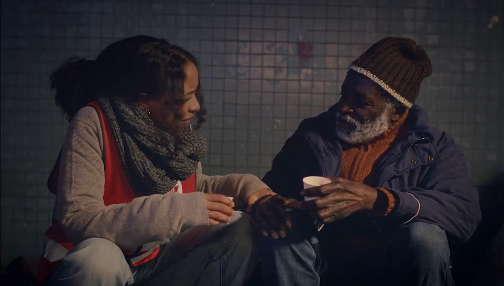
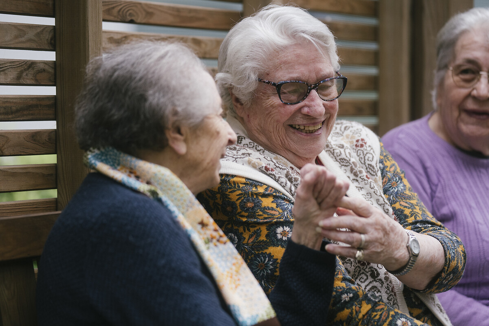

Nos dernières actualités
Moi demain : toutes les valeurs de la Fondation
Une exposition photo-témoignage à la Résidence Catherine Booth.
Lire l’article
Aide alimentaire : la fin des solutions uniques
À Lyon, les équipes réinventent l’aide alimentaire.
Lire l’article
Communiqués de presse
Communiqué
Été et précarité : l’Armée du Salut poursuit ses dispositifs
Face à l’augmentation de la précarité estivale, l’Armée du Salut renforce ses actions et lance un appel aux bénévoles.
Lire le communiqué →
Communiqué
Passerelle Plus : un an d’expérimentation à Montreuil
Un dispositif innovant pour accompagner durablement les personnes en situation de grande précarité.
Lire le communiqué →
Communiqué
Le Service Civique de nouveau menacé
Les associations alertent sur les conséquences d’une réduction des financements du Service Civique.
Lire le communiqué →